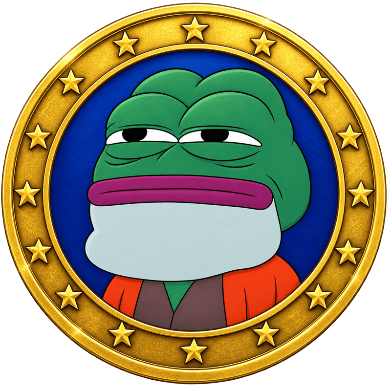
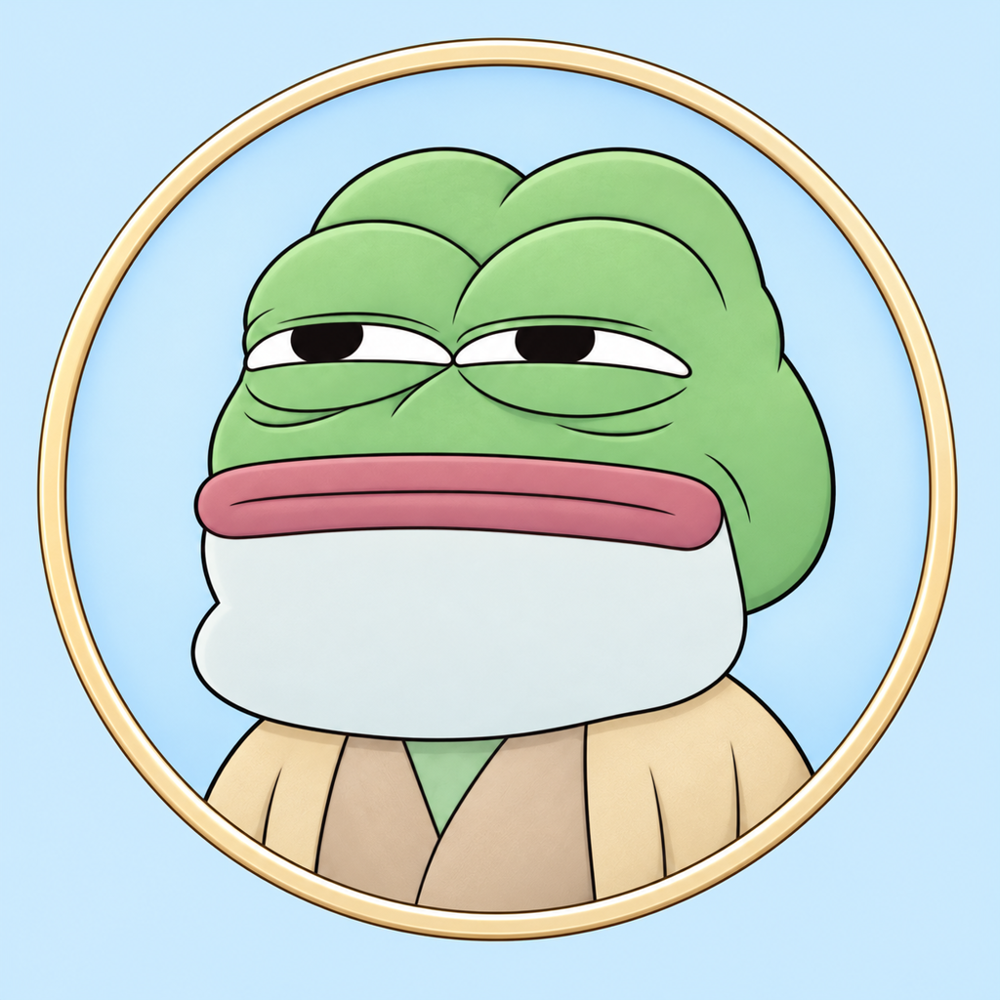
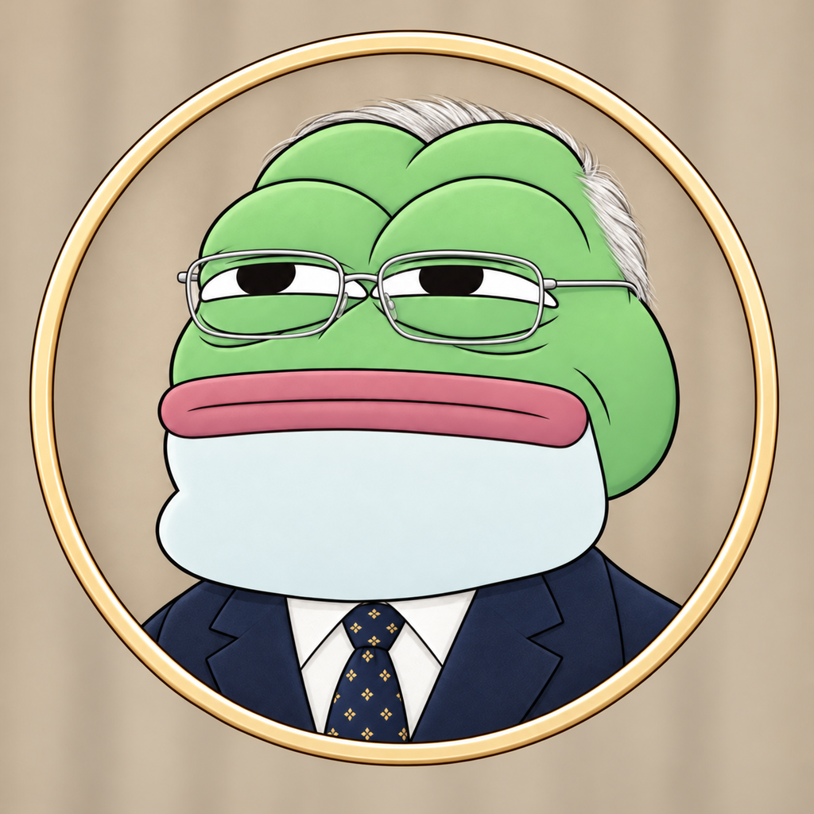

visualidentity.md · the IMD family
One face, many projects
IMD's gold coin stays IMD's. Every other project starts from the family base, a lighter, neutral copy of the same Pepe, and changes a few named parts. Two image jobs on IMD, 0.5 IMD each, and a project has a mark that is clearly part of the family.
1 · IMD official

IMD only. Orange robe, royal blue, gold coin with stars.
2 · family base

Everyone's starting point. Light, neutral colours, plain rim. image job ↗
3 · example project

The base with four parts changed: outfit, glasses, hair, background. Continued from the base job. image job ↗
What a project can change
| Part | Family base | Example |
|---|---|---|
| background | pale pastel sky blue | warm beige-taupe |
| skin | lighter soft green | kept |
| outfit | light sand robe | navy suit, white shirt, navy tie |
| eyes | smug eyes | thin metal glasses added |
| hat / hair | none | short white hair |
| moustache / accessory | none | kept |
| frame | plain champagne rim | kept |
The face, pose and expression never change. Keep the background and the skin clearly different colours.
Make yours
- Open explorer.imd.fun and start a Create image job (0.5 IMD).
- Paste the text below with your changes filled in.
- Use the result as your logo, with this package's
tokens.cssfor your site. Fill intemplate/visualidentity-template.md.
Draw a variant of the neutral default IMD coin Pepe. Start from the template image https://api.imd.fun/artifacts/61c6de390433a37b6c800799f11d5082150684efd972753db9e760b4e62f32de: the smug Pepe the Frog bust, centred, shoulders up, with lighter soft-green skin, inside a plain thin round pale champagne rim, in IMD's coin-art rendering with outlines and soft shading. Keep the bust, pose, face, expression, rim and rendering exactly as in the template. Change only these things: - <part>: <new look> - <part>: <new look> Square image, 1024 by 1024, PNG. No text, no letters, no watermark.